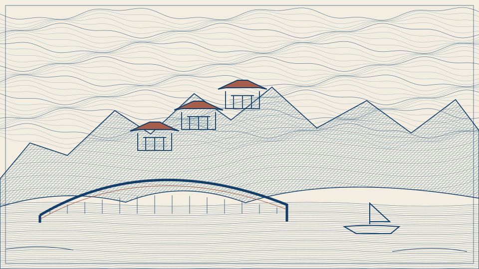
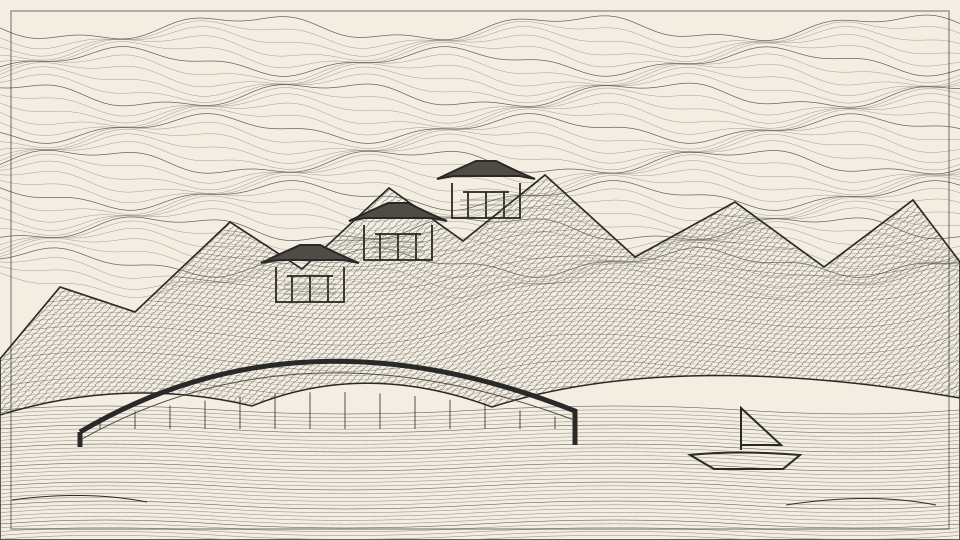

01 · 蓝色纸币凹版雕刻
普鲁士蓝与钢蓝、极少赭红，Guilloché 交织曲线与随形排线。
同一钢版雕刻风格族的两种配色表现。显式调用 Skill 时可以指定变体，不会自动接管其他生图。
下面两张是随包离线可用的矢量结构示意，用于说明配色和线条方向；不是经图像模型验证的高精度成品，也不自动作为模型参考图传入。

普鲁士蓝与钢蓝、极少赭红，Guilloché 交织曲线与随形排线。

炭黑与暖灰、象牙纸、交叉排线形成明暗，保持同一雕刻体系。